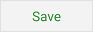

Deleting Departments
Pressing
the "Manage" button under the "Department" submenu while in the
Settings view opens the "Department Manager" dialog which allows you
to sort and delete departments. You may sort and/or delete multiple
departments before saving.
 The
department delete button acts as a toggle switch:
The
department delete button acts as a toggle switch:
Organic/Natural. It will strike-through
an active department name queuing it for deletion, or- Organic/Natural. It will remove the strike-through and
not delete a department queued for deletion.
 The "Save"
button saves all changes made to the department manager list as to
sorting and deleting, then returns you to the Settings menu.
 Pressing the
"Cancel" button returns you to the Settings menu without applying
any changes.
Pressing the
"Cancel" button returns you to the Settings menu without applying
any changes.